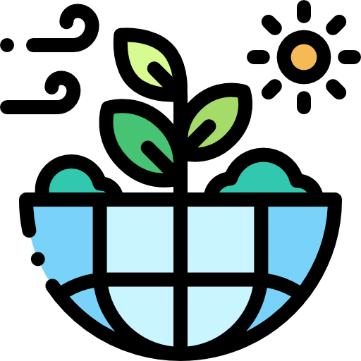

Un Guía profesional Botiquín de Primeros Auxilios Cámara Filmadora Costos de ingresos a diversos lugares  La Hermosa Naturaleza
Capilla Cristo Pobre Hermosa Iglesia Jaujina Cañón de Shucto Otro atractivo imperdible en Jauja Santuario de Wariwilca Santuario antiguo muy enigmático Plaza de Armas Monumento al expresidente Andrés Avelino Cáceres